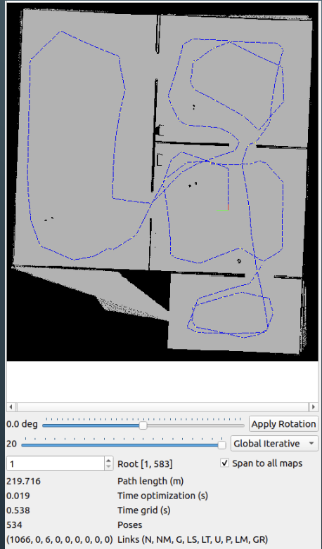

Home-Delivery Bot | Udacity Nanodegree (Scholarship Scholar)
Building Editor
Precise Localization
Mapping and Navigation

Project Overview and Key Contributions:
- Successfully developed a fully functional home-delivery robot within the Gazebo simulation environment using ROS (Robot Operating System).
- Designed and implemented robust feedback control systems to manage the robot's state dynamics, ensuring stable and predictable motion.
- Integrated and configured various sensors for perception and localization, including Rotary Encoders, Odometry (Odom), and an Inertial Measurement Unit (IMU).
- Implemented advanced sensor fusion techniques to combine data from multiple sensors, enhancing the accuracy and reliability of the robot's localization.
- Successfully deployed the AMCL (Adaptive Monte Carlo Localization) package for robust robot localization within a mapped environment.
- Developed path planning and navigation algorithms to enable the robot to autonomously navigate to target delivery locations while avoiding obstacles.
- Completed as part of the Udacity Robotics Software Engineer Nanodegree, for which a scholarship was awarded.